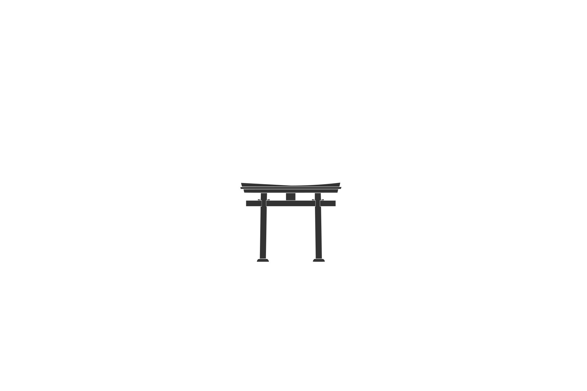
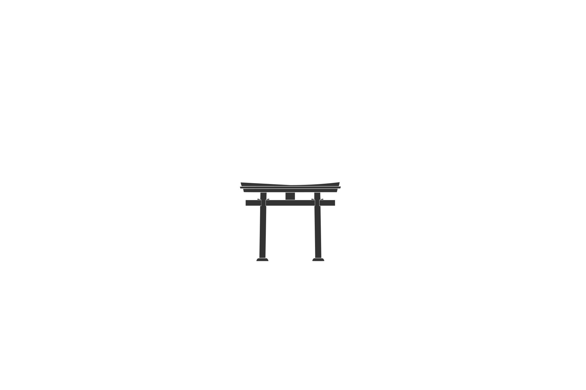
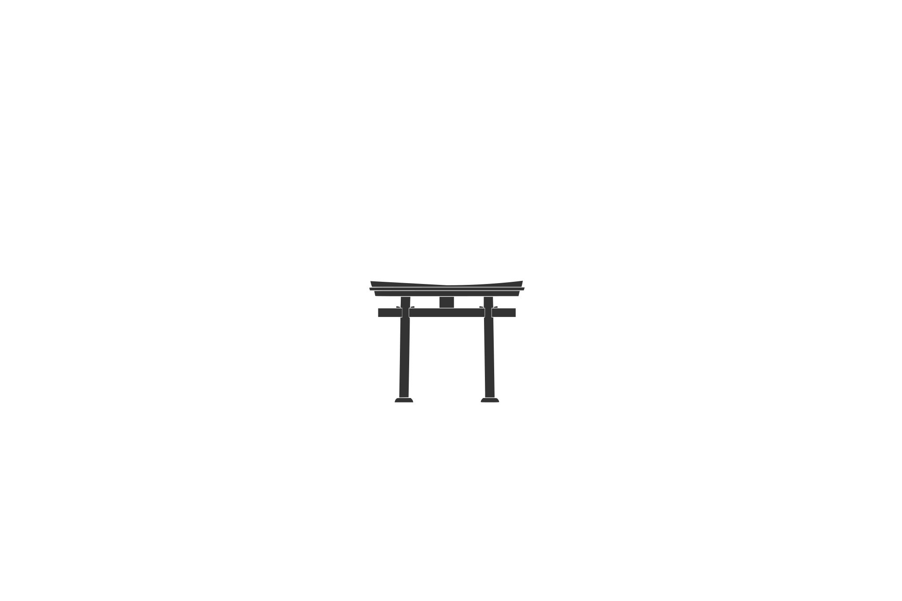

Torii wiki
 

A torii (Japanese: 鳥居, [to.ɾi.i]) is a traditional Japanese gate most commonly found at the entrance of or within a Shinto shrine, where it symbolically marks the transition from the mundane to the sacred

A torii (Japanese: 鳥居, [to.ɾi.i]) is a traditional Japanese gate most commonly found at the entrance of or within a Shinto shrine, where it symbolically marks the transition from the mundane to the sacred